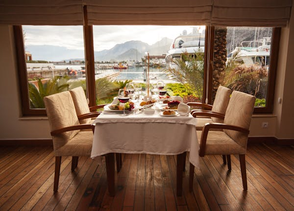
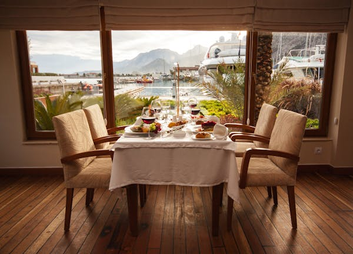

Hotel Devil
A Bold Retreat in the Heart of the City
Nestled in the vibrant pulse of the city, Hotel Devil is an avant-garde destination that artfully blends luxury with a touch of daring allure. With a name as bold as its design, Hotel Devil invites guests to indulge in an experience that is as unforgettable as it is opulent. From the moment you step into its sleek lobby, the hotel’s atmosphere captivates with ambient lighting, rich colors, and modern décor, all thoughtfully curated to embrace the hotel’s signature vibe of sophisticated edge.
Each of Hotel Devil’s rooms and suites is a sanctuary designed to provide ultimate comfort while captivating the senses. High-end linens, plush bedding, and customized lighting ensure restful sleep, while high-tech amenities cater to the modern traveler’s every need. For those who seek a more elevated experience, the Devil's Suite offers panoramic city views, a private terrace, and exclusive amenities designed for indulgence. The suite’s attention to detail and emphasis on privacy make it the ideal choice for discerning guests who crave an unforgettable stay.
Dining at Hotel Devil is an experience in itself, with the on-site restaurant, Lucifer’s Kitchen, delivering culinary creations that are as bold as the hotel’s name. Helmed by an award-winning chef, Lucifer’s Kitchen uses the finest ingredients to craft dishes that fuse flavors from around the world with a daring twist. The restaurant’s décor, much like the hotel itself, is sleek and dramatic, offering guests a memorable dining experience in an atmosphere of modern luxury.
After dinner, guests can unwind at the Underworld Lounge, a bar that lives up to its name with dim lighting, opulent velvet seating, and a cocktail menu designed to impress. The expert mixologists at Underworld Lounge are known for their skill in creating bold and unique drinks, from classic favorites to innovative new concoctions. The lounge’s atmosphere is the perfect blend of mystery and elegance, making it a favorite for both hotel guests and locals alike.
Hotel Devil goes beyond providing luxury; it offers a unique lifestyle experience. With a state-of-the-art fitness center, an exclusive spa offering a range of rejuvenating treatments, and a heated rooftop pool with sweeping views of the city skyline, guests have ample opportunities to unwind and rejuvenate. For those looking to combine business with pleasure, the hotel offers a range of meeting rooms and event spaces equipped with the latest technology, making it ideal for both intimate gatherings and large corporate events.
Located just minutes from the city’s top attractions, Hotel Devil is the perfect base for travelers eager to explore. The hotel’s concierge team is always ready to assist, providing personalized recommendations and insider tips for an authentic city experience. Whether you’re here for a romantic getaway, a business trip, or simply to experience the city’s vibrant culture, Hotel Devil promises a stay filled with comfort, style, and a touch of adventure.

 
